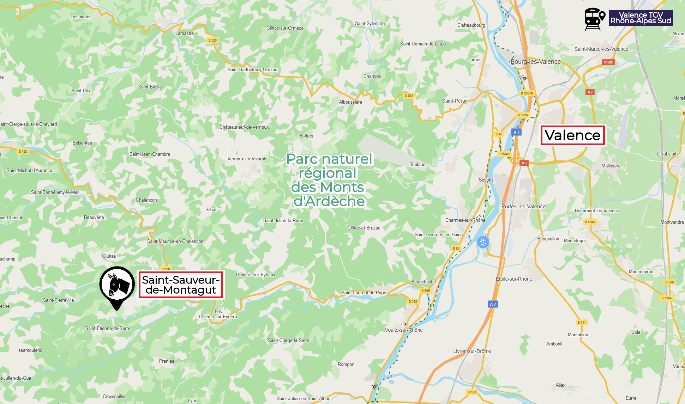

Bienvenue au Vernet de Danton
Deux gîtes en pleine nature...
 "Gite absolument parfait : intérieur élégant et confortable, très belle terrasse et excellent accueil des propriétaires."
"Gite absolument parfait : intérieur élégant et confortable, très belle terrasse et excellent accueil des propriétaires."
Louis - Juillet 2025
"Excellent accueil, maison très agréable bien agencée, propre avec une vue magnifique et très calme.
Kristin nous a accueilli avec un grand sourire et proposé pleins d’activités dans la région.
Un grand merci, nous reviendrons.
À recommander."Claude - Mai 2025
Les amandiers
"Nous avons passé une très belle semaine en famille dans le logement de Kristin et de Thierry. C'est un véritable havre de paix, de verdure, une reconnexion totale avec la nature.
Nos hôtes ont été charmants, plein de conseils de marchés, de restaurants, d'idées de randonnées. Un grand merci !"
Suys - Juillet 2025
"Lieu idéal pour découvrir l Ardèche.Des hôtes chaleureux avec qui nous avons pris plaisir à échanger. C'est le lieu parfait pour se reposer et se ressourcer, de nombreuses balades
tout autour et logement très bien équipé et aménagé. Nous recommandons à 100% et y retournerons avec grand plaisir."
Nebout - Mai 2025
Le tilleul
... au cœur de l'Ardèche !
Retrouvez-nous à seulement 1h de Valence.

Découvrez les activités locales